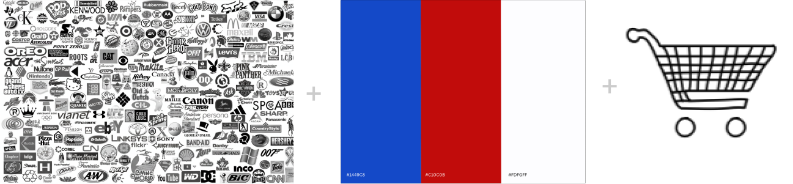

Question
The article told me brands were losing shoppers. I wanted you to feel it.
Process
I put you in the shopper’s seat. Reach for an American product and it pulls away.
Breakdown

Open live experienceReflection
The emptier the shelves get, the more you notice who was doing the buying.
Open live experience ↗